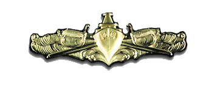
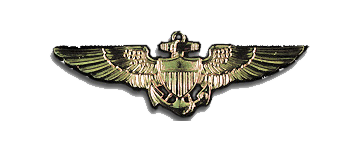
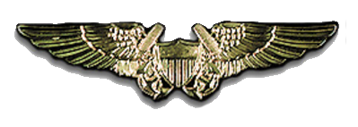
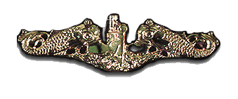
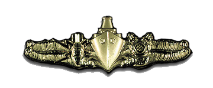
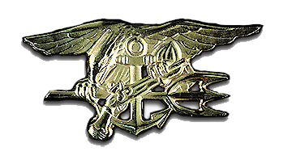
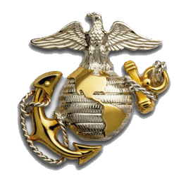
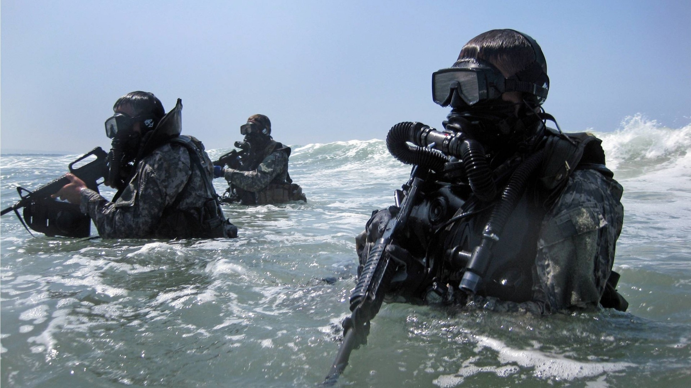
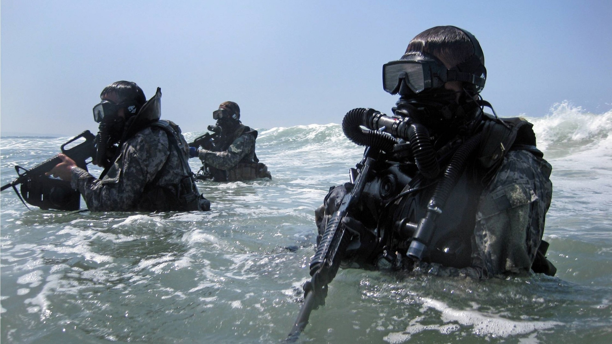

Navy Option
Although Naval Officers are split into two categories, Restricted Line Officers and Unrestricted Line Officers, the NROTC Program's focus is on commissioning Unrestricted Line Officers to lead the Navy's war fighting capabilities. For more information go to the Navy Careers web page.
Surface Warfare Officer:
While the U.S. Navy has the most technically and tactically advanced defense and war-fighting capabilities on land, in the air, and under the sea, the mainstay of the force is the vast fleet of aircraft carriers, cruisers, destroyers, dock landing ships, and other surface vessels. These ships and their crews are commanded and managed by an elite group of ship drivers and ship fighters – the Navy’s Surface Warfare Officers. If you’re up for the challenge of inspiring a ship’s crew and being at the helm of million-dollar high-tech equipment, accelerate your life as a Surface Warfare Officer.

Naval Aviator:
As a Navy pilot you'll fly from land bases and ships often at a moments notice to perform missions across the globe. Pilots can fly in a number of navy aircraft, including jet, helicopter, turbo-propeller or other tactical aircraft.

Naval Flight Officer:
Naval flight officers (NFOs) are the key to successful mission accomplishment. NFOs received specialized training on the advanced tactical systems and complex communication systems found onboard Navy aircraft.

Submarine Warfare Officer:
This silent service is based on stealth, with missions including but not limited to anti-submarine warfare, anti-surface warfare, coastal surveillance, and ballistic missile strategic defense.

Special Operations Officer:
Their mission is to detect, identify, render safe, and dispose of explosive ordnance and related devices.

Special Warfare Officer:
This officer concentrates on the development of skills in the areas of unconventional warfare, counterinsurgency, coastal and riverine interdiction and tactical intelligence collection.

Marine Option
As a Marine Corps Officer, your future begins to take shape in The Basic School (TBS). The NROTC Program specializes in two main occupational areas: Ground and Aviation, with over 20 possible Military Occupational Specialties (MOSs) to pursue.
All MOSs are awarded based on merit, potential, and desire. However, approximately 90% of all graduates from The Basic School are assigned to one of their top five choices. Regardless of which field you choose, you will lead Marines through missions essential to our nation's security.

Combat Arms:
This is the basis of the Marine Corps and the principle war fighting capability, including Infantry Officers, Field Artillery Officers and Tank Officers.
Combat Service Support:
These warfighters ensure the Combat Arms have the tools they require for mission accomplishment. Occupations include: Ground Intelligence Officers, Communications Systems Officers and Logistics Officers.
Ground Aviation:
This specialty provides the link between the ground and aviation forces as well as supporting each aviation platform. Officers specialize as Aviation Intelligence Officers, Aviation Maintenance Officers, Air Traffic Control Officers and more.
Pilot:
Flying fixed-wing, rotary-wing, or tilt-rotor aircraft, these pilots control the most advanced aviation weaponry available.
Naval Flight Officer:
These officers provide the pilot mission-critical information including navigation, electronic warfare measures, and weapon systems control.

 
